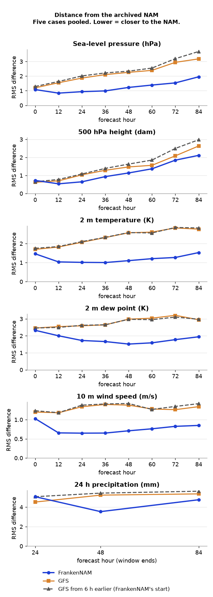

Validation
Is FrankenNAM consistent with the archived NAM, and distinct from the GFS?
Five cases chosen for their weather (an autumn case and four winter or storm cases forecasters know); no significance tests.
Distance from the archived NAM
Each run is compared with the archived NAM at the same forecast hour, grid to grid: 0.25° boxes over land in the lower 48 states, model minus archived NAM, pooled over the five cases. Lower means closer to the NAM. The closest in each row is shaded.
FrankenNAM starts from the GFS analysis 6 h before the cycle time, so we show the GFS from 6 h earlier (FrankenNAM’s start) as well: it holds the same information FrankenNAM starts with. The GFS column is the run for the cycle itself.
| Field | Lead | FrankenNAM | GFS | GFS from 6 h earlier |
|---|---|---|---|---|
| Sea-level pressure (hPa) | f24 | 0.94 | 1.87 | 2.01 |
| Sea-level pressure (hPa) | f48 | 1.23 | 2.26 | 2.34 |
| Sea-level pressure (hPa) | f84 | 1.95 | 3.18 | 3.69 |
| 500 hPa height (dam) | f24 | 0.65 | 1.03 | 1.08 |
| 500 hPa height (dam) | f48 | 1.14 | 1.47 | 1.63 |
| 500 hPa height (dam) | f84 | 2.11 | 2.64 | 2.98 |
| 2 m temperature (K) | f24 | 1.01 | 2.07 | 2.10 |
| 2 m temperature (K) | f48 | 1.10 | 2.57 | 2.58 |
| 2 m temperature (K) | f84 | 1.53 | 2.76 | 2.82 |
| 2 m dew point (K) | f24 | 1.73 | 2.59 | 2.62 |
| 2 m dew point (K) | f48 | 1.52 | 2.98 | 2.97 |
| 2 m dew point (K) | f84 | 1.94 | 2.95 | 2.98 |
| 10 m wind speed (m/s) | f24 | 0.65 | 1.34 | 1.38 |
| 10 m wind speed (m/s) | f48 | 0.71 | 1.38 | 1.42 |
| 10 m wind speed (m/s) | f84 | 0.85 | 1.34 | 1.42 |
| 24 h precipitation (mm) | 0–24 h | 5.07 | 4.52 | 5.07 |
| 24 h precipitation (mm) | 24–48 h | 3.54 | 5.23 | 5.43 |
| 24 h precipitation (mm) | 60–84 h | 4.75 | 5.36 | 5.63 |

? how this was scored
verify/results/phase1b/g2g.csv.2 m dew point
FrankenNAM runs drier than the NAM near the surface: its 2 m dew point is 0.9 K lower on average over the first day, and 0.1 K lower by f84. The cause is not yet known.
Bias, model minus archived NAM, K, pooled over the five cases. Negative = drier than the NAM. The GFS is also drier than the NAM, and FrankenNAM starts from the GFS.
| Lead | FrankenNAM | GFS | GFS from 6 h earlier |
|---|---|---|---|
| f00 | -1.04 | -1.26 | -1.26 |
| f12 | -0.92 | -1.19 | -1.13 |
| f24 | -0.67 | -1.03 | -0.97 |
| f48 | -0.38 | -0.47 | -0.38 |
| f84 | -0.10 | -0.05 | +0.07 |
The four validation cases (cold-air damming, Snowcrete, Gulf Coast snow, the PNW bomb cyclone) are on the home page.
Side by side with the archived NAM
FrankenNAM (left) and the archived NAM (right): same field, forecast hour and colour scale, for the 2026-11-01 00Z cycle. Drag the slider or press play to step through f00 to f84. Open the full viewer.